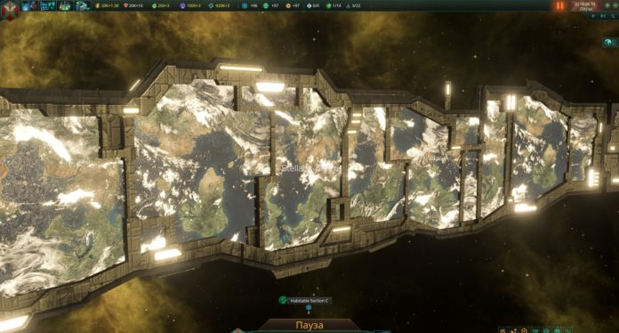
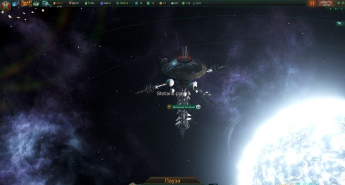
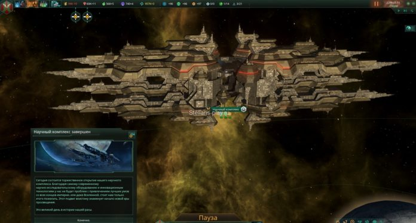

Мир-кольцо
Раньше такие сооружения были только у Угасшей империи и вам приходилось воевать за то, что бы отобрать этот лакомый кусочек. Но времена меняются — теперь вы можете строить их сами! Для создания этого гиганта необходима технология Мир-кольцо, которая становится доступна после принятия бонуса Галактические чудеса. Кольцо — это огромная структура, представляющая из себя сооружение, опоясывающее целую звезду. Его можно строить только в системах с одной звездой и отсутствием пригодных для заселения миров. Кроме того, система должна быть полностью изучена. В готовом виде структура предоставляет для заселения 4 площадки по 5 особых секторов с 100%-ой пригодностью.
Строится оно также как и среда обитания — вы выбираете строительный корабль, кликаете ПКМ по звезде, нажимаете Построить Мегасооружения и выбираете мир-кольцо. Кольцевой мир, а также все остальные сооружения отличаются от среды обитания тем что они строятся в несколько этапов. Первый этап строительства кольца — это создание площадки на орбите звезды, которая стоит 5.000Alloys.pngсплавов, 300влияния. Строительство продолжается в течении 5Timeлет.
Всего в кольце имеется 4 секции. Для колонизации не обязательно ждать готовности всех 4 секторов. Спустя некоторое время и вливания остальных 30.000 сплавовAlloys.pngвы полностью завершаете этот проект!
А вот так выглядит кольцо изнутри.
Дозорный комплекс
Этот комплекс, оборудованный современной аппаратурой и мощнейшими антеннам с кучей различных датчиков позволяет всматриваться в самые далекие уголки холодного и враждебного космоса. В общем — это сооружение дает возможность наблюдать за тем что происходит в любой системе галактики(за исключением туманностей). Дозорный комплекс попадает под ограничения — вы не сможете построить более одного строения. Для постройки необходима технология Дозорный комплекс в физ.ветке. Как и мир-кольцо создается в несколько этапов, однако начинает работать и давать информацию будучи недостроенным. Но для начала вам нужно создать строительную площадку,которая стоит 5.000 сплавовAlloys.png, 300 влиянияи занимает время строительства в размере 5-ти летTime.
Научный комплекс
Научный комплекс — массивное мегасооружение, которое находится на орбите планеты, представляющее из себя одну огромную лабораторию, в которой ученые вашей империи трудятся не покладая рук. Начало его строительства начинается с установки фундамента, в роли которого выступает строительная площадка. Цена такая же — 5000Alloys.pngсплавов, 300 влиянияи 5 летTimeнепрерывного строительства. По аналогии с Дозорным комплексом и Cферой Дайсона это строение дает очки науки с самого начала, увеличивая производство науки с повышением уровня.
Готовый Научный центр будет приноситься вам по 300 очков науки и ускоряет исследованиена 15%. Содержание 100 энергокредитов. Стоит отметить еще тот факт, что после завершения комплекса может произойти эвент, который поднимет прирост очков науки с 300 до 350, однако шанс не очень большой — всего 30%.
